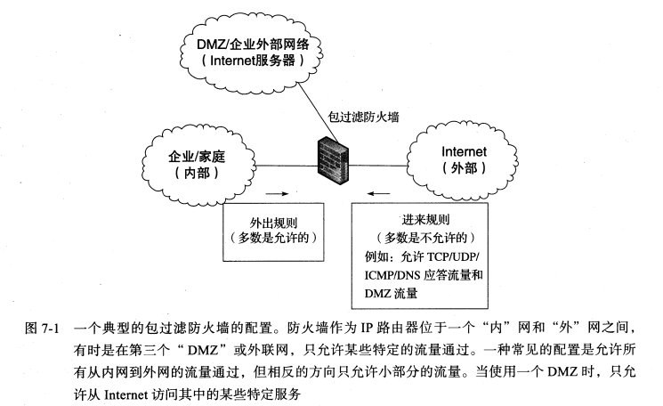
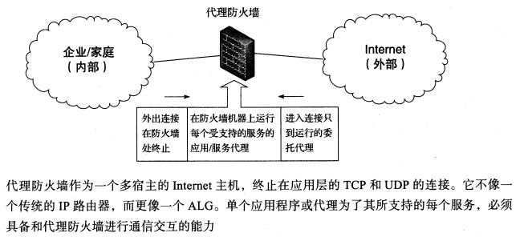
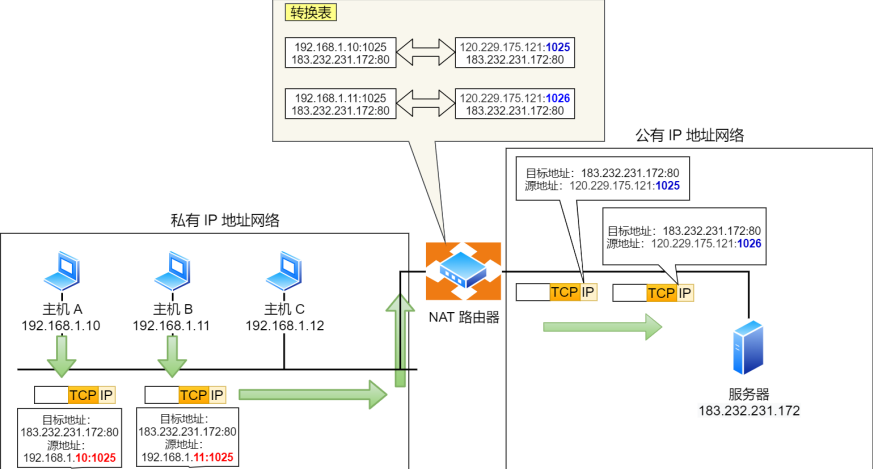

[TCP/IP详解]:防火墙与NAT
1. 防火墙
简介
防火墙是一种用于限制所转发流量类型的路由器, 最常用的两种防火墙为代理防火墙与包过滤防火墙
1. 包过滤防火墙
概念
包过滤防火墙会设置一个过滤器，当有报文需要转发时，会检查其网络层或传输层报头中的某些字段，如IP地址，ICMP类型，根据数据报端口号确定的各种UDP/TCP服务
无状态与有状态
包过滤防火墙还分有无状态和有状态两种，无状态的包过滤防火墙会过滤每一个数据报，而有状态的防火墙能够推断出那些属于同一个IP数据报但是还未到达的IP的消息
图例

DMZ(Demilitarized Zone, 非军事区), 是一个外网和内网之间，用于给外网提供服务的子网，通常不包含任何机密资料
2. 代理防火墙
概念
代理防火墙并不是真正意义上的网络路由器，而是运行着一个或多个**应用层网关(Application-Layer Gateways, ALG)**的主机，该主机拥有多个网络接口，可以在应用层中继两个连接之间的流量
客户机会将防火墙当做服务器，服务器会将防火墙当做客户机
所谓的网关，就是中继设备，用于连接不同的主机或路由器
代理防火墙必须要为每个传输层服务设置一个代理，任何新服务如果想要与防火墙通信，必须要在防火墙中设置相应的代理服务，这极大确保了安全性
图例

实例
代理防火墙的两种最常见形式为: HTTP代理防火墙，SOCKS防火墙
2. NAT
网路地址转换(NAT)
- NAT:NetWork Address Translation
NAT产生的背景
IPv4地址逐渐被瓜分殆尽,NAT技术的出现使得IPV4起死回生
NAT的作用
NAT的作用即是是一个子网对于外界来说使用一个共同的IP地址
NAT使能路由器对外界来说就如同一个具有单一IP地址的单一网络，它对外界隐藏了了家庭网络的细节
[RFC1918]规定了三个保留地址段落：10.0.0.0-10.255.255.255；172.16.0.0-172.31.255.255；192.168.0.0-192.168.255.255
这三个范围分别处于A,B,C类的地址段，不向特定的用户分配，被
IANA作为私有地址保留这些地址可以在任何组织或企业内部使用，和其他Internet地址的区别就是，仅能在内部使用，不能作为全球路由地址，
这些IP地址也被称为私网IP
路由器从ISP经过DHCP协议得到它的Ip地址，并为它所控制的家庭网络中的主机提供地址
如今的NAT是基本NAT + NAPT(Network Address Port Translation, 网络地址端口转换)
基本NAT只会执行IP地址的重写，但这样的话就要求当同时有N个设备发出报文时，NAT路由器必须能够提供N个公有地址，有些不现实
NAPT则是采用了公有IP+不同端口号的方式，这使得通常只需要一个公有IP地址即可

NAT的实现过程
NAT转换表:
NAT转换表中包含了家庭网络，即私网中的主机的端口号和IP地址(家庭网络地址),
当建立TCP连接时，一旦SYN报文被发出，表中就会增加一个条目，而一旦接收到FIN报文，表文对应的条目就会被删除
一个主机位于家庭网络地址为10.0.0.1,请求IP地址为128.119.40.186的某台Web服务器上的一个Web页面
源主机任意指派了一个源端口号3345并将数据报发送到局域网中
NAT路由器接收到该数据报，并为该数据报生成一个新的源端口号5001(这个源端口号不能出现在当前的NAT转换表中)，将其源IP地址改为自身输出接口的IP地址
通过NAT公有IP + 端口号，可以生成大量不同套接字
NAT路由器的NAT转换表增加表项(3345,10.0.0.1,5001)
Web服务器接收到请求报文，发送响应报文，目的IP与目的端口均是路由器之前自己生成的
路由器接收到响应报文，将其中的目的IP与目的端口改为源主机的IP与端口(10.0.0.1,2245)，并将响应发送给源主机
NAT的缺点
- 外部⽆法主动与 NAT 内部设备建⽴连接
- 转换表的⽣成与转换操作都会产⽣性能开销
- 通信过程中，如果 NAT 路由器重启了，所有的 TCP 连接都将被重置
NAT穿越技术
NAT 穿越技术拥有这样的功能: 它能够让⽹络应⽤程序主动发现自己位于 NAT 设备之后，并且会主动获得 NAT设备的公有 IP，并为⾃⼰建⽴端⼝映射条⽬，即不需要NAT路由器为它建立映射了
本博客所有文章除特别声明外，均采用 CC BY-SA 4.0 协议 ，转载请注明出处！